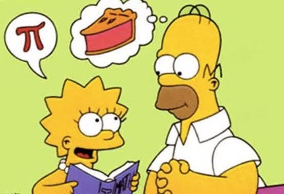
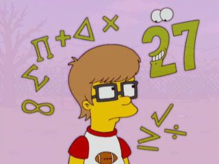

CAPITULO 2
¿ERES π-CURIOSO?

Las referencias matematicas son enormemente oscuras, incluso las bromas son conceptos matematicos.
El primer libro que empleo fue llamado nueva introduccion a las matematicas donde empleo letras griegas ablando de la geometria
se dio cuenta que para medir con precision, primero tenia que medir tambien de una precisa longituden la circunferencia.
Arquimedes no usaba la notacion algebraica moderna, no tenia conocimiento de los decimales.
Es un trabajo muy duro medir que tardariamos en concluir toda la eternidad, eso se debe a que π es irracional.
Antes trataron de posponerla indefinidamente a π de igual forma querian declarar que π equivalia a 3 era un recordatorio claro de la ley propuesta.
